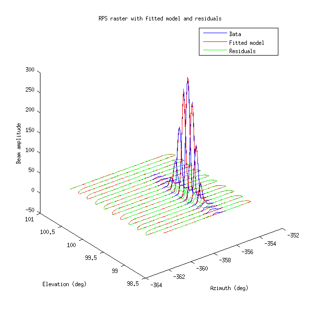
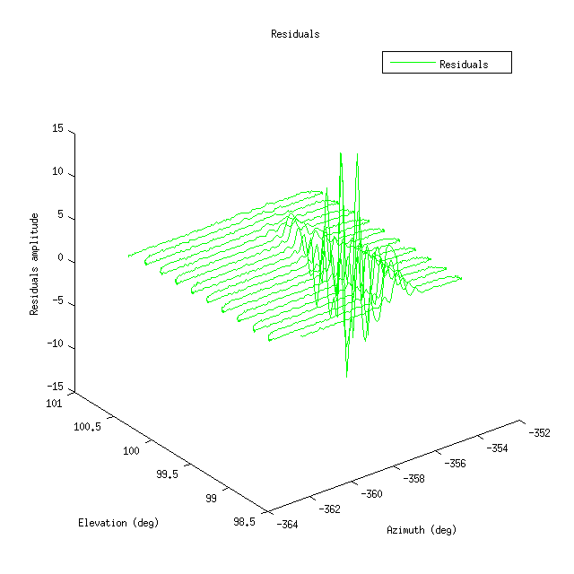

- Beam parameter
- Source and mirror parameters
- Impact of mirror and source parameters on detector centroids position
Preliminary data processing and selection
The data set used for this work is similar to the one used in James's analysis (RPS observations made in January 2018), though with more data cuts applied.
The very first step is to read ARC files and demodulate tods - I use here the exact same code as James (rps_read.m). During this step, raw encoder mount coordinates
are converted to topocentric coordinates of the instrument boresight using the inverse pointing model (see e.g. Kiwon's thesis ).
I then select detectors based on dk angle, source and detector polarisation angles so that the detector response is maximised, i.e. the detector polarisation axis is aligned with the one of the source given the deck angle.
The exact alignement of detector and source axis can only be obtained for deck angles of 0 and 90 deg, however for deck angles of 45 and 135, we can select detectors not perfectly aligned with the source, but that still have
a high response.
Parameter estimation
There are two possible workflows here. The first possible approach is to first convert $(az,el)$ coordinates of the raster scan to $(r,\theta)$, and then fit for beam parameters - is exactly what is implemented by James in his current work. The second approach is to fit for beam parameters in $(az,el)$, then convert the obtained detector centroids position parameters to $(r,\theta)$ while iterating on mirror/source parameters to minimise the difference with CMB-derived detector positions. I think the second approach is easier to implement, in particular to loop on source/mirror parameters to minimise the difference with CMB-derived detector positions, so this is what I am describing here.
Beam parameters
I fit for beams parameters in the (az,el) topocentric coordinate system of the instrument boresight. Beams are modeled by 2d elliptical gaussians:
\begin{equation}
B(\mathbf{p}) = A e^{-\frac{1}{2}\left[(\mathbf{p} - \mathbf{p}_0)^t \Sigma^{-1} (\mathbf{p} - \mathbf{p}_0)\right]}
\end{equation}
with $\mathbf{p} = (az,el)$ the time series coordinates of the instrument boresight, $\mathbf{p}_0 = (az_0,el_0)$ the position of the beam center
and $\Sigma$ the beam covariance matrix:
\begin{equation}
\Sigma = \begin{bmatrix} \sigma_{az}^2& \rho \sigma_{az} \sigma_{el} \\ \rho \sigma_{az} \sigma_{el} & \sigma_{el}^2 \end{bmatrix}
\end{equation}
The parameters that we fit for are thus $az_0, el_0, \sigma_{az}, \sigma_{el}, \rho$ and $A$.
|  |
|  |
Source and mirror parameters
Once we have reconstructed beam parameters in the topocentric coordinate system of the telescope boresight, we can convert this parameters to the focal plane coordinate system $(r, \theta)$ using the beam map pointing model (keck_beam_map_pointing.m). To do this we need information about the mirror and the source parameters. The parameters that we will consider here (to start with - see below):
- mirror roll $r$;
- mirror tilt $t$;
- source azimuth $s_{az}$;
- source height $s_h$.
Impact of mirror and source parameters on detector centroids position
This pager presents the impact of a variation of the four previously mentioned source and mirror parameters on the reconstructed detector position in the focal plane coordinate system $(x,y)$.
Optimisation of mirror and source parameters
Framework
The general idea is to derive a $\chi^2$ to optimise mirror parameters by minimising the difference in detector centroid positions
between CMB-derived positions (="true" positions) and source-derived positions, that depend on mirror (and source) parameters.
According to James's uncertainty analysis (see pp. 47-48),
the most important - if not the only - source of uncertainty on final detector polarisation angles is the systematic uncertainty on the mirror roll, $r$.
\begin{equation}
\chi^2(r) = \sum_{i = 1}^{n_{det}} \left[(x_{RPS}(r) - x_{CMB})^2 + (y_{RPS}(r) - y_{CMB})_i^2 \right] w_i
\end{equation}
with $w_i = \frac{1}{\sigma_i^2}$ - not sure yet how to define the noise variance $\sigma_i$ in this context
$\rightarrow$ we can start by using the variance on beam centroids residuals. We also need to pay attention to relative uncertainties on RPS- and CMB-derived parameters,
as we may need to add them in quadrature if they are both significant.
Results
Note on detector positions
For some of the detectors, we have several position measurements, depending on their position on the focal plane and the RPS scan. For these detectors, I combine the measurements by taking their weighted average, with the weights being the inverse of the variance on beam centroids residuals: \begin{equation} w_{i} = \frac{1}{\sigma_{i}^2}, \end{equation} and the uncertainty on the weighted average is taken as \begin{equation} \sigma_{average} = \sqrt{\frac{1}{\Sigma_{i}\sigma_{i}^{-2}}}. \end{equation} The uncertainty of the weighted average $\sigma_{average}$ is the uncertainty that goes into the $\chi^2$ computation, Eq. (5).
1D-fit and gridding of the $\chi^2$
I start by minimising Eq. (5) with respect to the 4 parameters previously mentioned. I choose the weights $w_i$ as the inverse of the variance of the residuals obtained when fitting for detector centroids position. I do not consider a measurement uncertainty associated with CMB-derived measurement at this step. For each parameter, the following figure shows the reconstructed focal plane with the optimised parameter, the associated quiver plot, as well as the shape of the $\chi^2$ function. All these plots are made for a deck angle of 0.
| Fitted parameter | Mirror tilt (deg) | Mirror roll (deg) | Source azimuth (deg) | Source height (m) | None |
|---|---|---|---|---|---|
| Best-fit value | 44.6872 | 0.1428 | -177.6564 | 7.8556 | N/A |
| Default value | 44.6870 | 0.1480 | -177.6500 | 7.8964 | N/A |
| $\chi^2$ | 8.9259 | 8.7581 | 8.8058 | 8.9263 | 8.9264 |
Degeneracies
As shown in the figure below - and as expected - the source height is degenerate with the mirror tilt, and the source azimuth is degenerate with the mirror roll. It is therefore not possible to fit for these parameters simultaneously. Again only deck angle = 0 is considered here.| Fitted parameters | Mirror roll Source azimuth |
Mirror tilt Source height |
|---|---|---|
| Best-fit values | roll = 0.1151 deg az = -177.6092 deg |
tilt = 46.3589 deg h = 19.2624 m |
| $\chi^2$ | 8.6305 | 6.1627 |
Results at different deck angles
For this analysis, we have measurements at 4 different deck angles: 0, 45, 90 and 135 deg. All data sets were taken in January 2018,
and the data selection, data reduction and parameter fitting pipelines (as described in this posting) are the same for all data sets.
I first analyse each deck angle separately, then I combine all 4 data sets in
one single set of detector positions on which the mirror and source parameter
estimation is done. Similarly to the case where we have several measurements for one detector
at a given deck angle, positions at different deck angles are combined through a weighted average, with the
weight for a position at a given deck angle taken as
\begin{equation}
w_{dk} = \frac{1}{\sigma_{dk}^2},
\end{equation}
and the uncertainty on the weighted average
\begin{equation}
\sigma_{all \, dk} = \sqrt{\frac{1}{\Sigma_{dk}\sigma_{dk}^{-2}}}.
\end{equation}
The uncertainty of the weighted average $\sigma_{all \, dk}$ is the uncertainty
that goes into the $\chi^2$ computation, Eq. (5).
Fitting mirror parameters + source azimuth
| Deck angle | 0 | 45 | 90 | 135 | All | Default (no fit) |
|---|---|---|---|---|---|---|
| Mirror tilt (deg) | 44.6876 | 44.6951 | 44.6971 | 44.6937 | 44.6949 | 44.6870 |
| Mirror roll (deg) | 0.1149 | 0.0965 | 0.1198 | 0.1208 | 0.1125 | 0.1480 |
| Source azimuth (deg) | -177.6071 | -177.5812 | -177.6122 | -177.6115 | -177.5996 | -177.6500 |
Fitting source parameters + mirror roll
| Deck angle | 0 | 45 | 90 | 135 | All | Default (no fit) |
|---|---|---|---|---|---|---|
| Mirror roll (deg) | 0.1150 | 0.0965 | 0.1198 | 0.1208 | 0.1125 | 0.1480 |
| Source azimuth (deg) | -177.6071 | -177.5812 | -177.6121 | -177.6115 | -177.5997 | -177.6500 |
| Source height (m) | 7.8930 | 7.8415 | 7.8277 | 7.8516 | 7.8435 | 7.8964 |